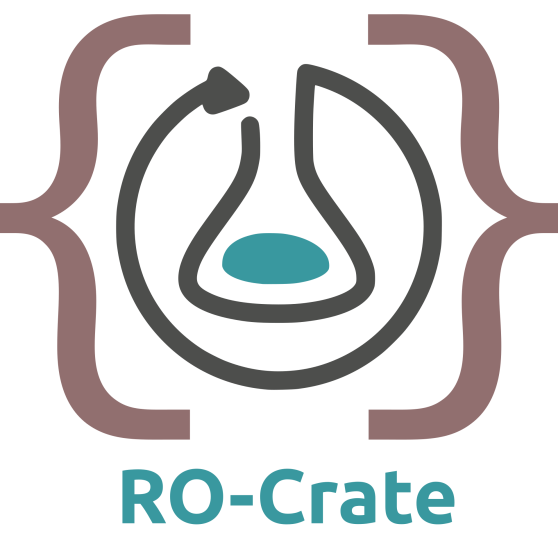

RO-Crate Excel Server
A small HTTP service that converts an Excel workbook into RO-Crate JSON-LD using ro-crate-excel. This service is maintained by Danny Kennedy of BKRLCC and Light Garden. It is open-source (GPL), but is NOT an official service associated with RO-Crate.
Currently this service is in active development and may change without notice. If you have any questions or encounter issues, please reach out to the maintainers.
Code is at github.com/light-garden-projects/ro-crate-excel-server
POST/convert
Upload one or more .xlsx workbooks as
multipart/form-data, each in a field named
file. Set every part's filename to that workbook's
path relative to the archive root (POSIX
/ separators), for example
Collection A/Videos/metadata.xlsx. The server derives each
sheet's folder prefix from that path so the (forthcoming) merge step can
rebase its file references.
Request
| Field | Type | Notes |
|---|---|---|
file |
file (.xlsx) |
Required, repeatable. The RO-Crate metadata spreadsheet. Its
filename is treated as the archive-root-relative path and
must be a relative POSIX path: no leading /, no
.. or . segments, and unique across the
upload.
|
Example
# Single workbook
curl -X POST \
-F "file=@ro-crate-metadata.xlsx" \
https://ro-crate-excel-api.light.garden/convert
# Multiple workbooks, each carrying its archive-root-relative path
curl -X POST \
-F "file=@root.xlsx;filename=ro-crate-metadata.xlsx" \
-F "file=@videos.xlsx;filename=Collection A/Videos/metadata.xlsx" \
https://ro-crate-excel-api.light.garden/convert
Add ?report=1 to receive an
application/json envelope
{ "crate": { ... }, "warnings": [ ... ] } instead of the
bare crate (single-workbook uploads). Each warning has a
source, a level (warning or
error), and a message. Warnings with
source: "check" flag { "@id" } references that
point to an entity not defined in the crate (for example, an entity
described in another sheet or workbook).
Responses
| Status | Meaning |
|---|---|
200 |
Single workbook: RO-Crate JSON-LD
(application/ld+json), or a
{ crate, warnings } envelope with
?report=1.Multiple workbooks: an interim application/json envelope
{ "sheets": [ { "path", "crate", "warnings" }, … ] }
with one entry per uploaded workbook. A single merged crate will
replace this once the merge step lands.
|
400 |
No file, a non-.xlsx file, an absolute or
traversal-containing (..) path, a duplicate path, or a
workbook that could not be parsed.
|
413 |
A file exceeds the size limit, or too many files were uploaded. |
Try it
Upload an .xlsx workbook and convert it right here in
your browser.
ro-crate comes from ro-crate-excel; repaired is an automatic fix we applied — see repair strategies; check flags a reference that points to an entity not defined in the crate.
POST/validate
Validate an RO-Crate JSON-LD document against the RO-Crate
specification. Send the crate as the request body with a
Content-Type of application/json or
application/ld+json.
Example
curl -X POST \
-H "Content-Type: application/ld+json" \
--data-binary @ro-crate-metadata.json \
https://ro-crate-excel-api.light.garden/validateResponse
200 with a JSON body
{ "valid": boolean, "results": [ ... ] }. Each result has
an id, a status of success,
warning, or error, a message, and
a spec clause. valid is
false when any result is an error. A body that
is missing or not a JSON object returns 400.
Try it
Paste RO-Crate JSON-LD below, or load a .json /
.jsonld file, then check it against the RO-Crate
specification.
GET/health
Liveness check. Returns { "status": "ok" }.